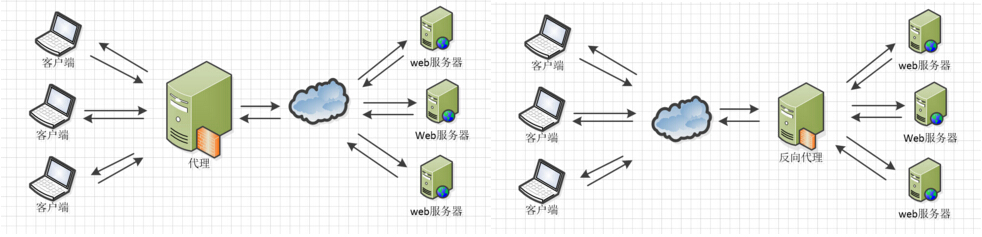

本文最后更新于：2021年6月15日 上午
简介
Nginx是lgor Sysoev为俄罗斯访问量第二的rambler.ru站点设计开发的。从2004年发布至今，凭借开源的力量，已经接近成熟与完善。
Nginx功能丰富，可作为HTTP服务器，也可作为反向代理服务器，邮件服务器。支持FastCGI、SSL、Virtual Host、URL Rewrite、Gzip等功能。并且支持很多第三方的模块扩展。
Nginx的稳定性、功能集、示例配置文件和低系统资源的消耗让他后来居上，在全球活跃的网站中有12.18%的使用比率，大约为2220万个网站。
Nginx常用功能
1、Http代理，反向代理：作为web服务器最常用的功能之一，尤其是反向代理
正向代理和反向代理：

Nginx在做反向代理时，提供性能稳定，并且能够提供配置灵活的转发功能。Nginx可以根据不同的正则匹配，采取不同的转发策略，比如图片文件结尾的文件服务器，动态页面web服务器，只要你正则写的没问题，又有相对应的服务器解决方案，你就可以随心所欲的玩。并且Nginx对返回结果进行错误页跳转，异常判断等。如果被分发的服务器存在异常，他可以将请求重新转发给另外一台服务器，然后自动去除异常服务器。
2、负载均衡
Nginx提供的负载均衡策略有2种：内置策略和扩展策略。内置策略为轮询，加权轮询，Ip hash。扩展策略，就天马行空，只有你想不到的没有他做不到的啦，你可以参照所有的负载均衡算法，给他一一找出来做下实现。
上3个图，理解这三种负载均衡算法的实现

Ip hash算法，对客户端请求的ip进行hash操作，然后根据hash结果将同一个客户端ip的请求分发给同一台服务器进行处理，可以解决session不共享的问题。

3、web缓存
Nginx可以对不同的文件做不同的缓存处理，配置灵活，并且支持FastCGI_Cache，主要用于对FastCGI的动态程序进行缓存。配合着第三方的ngx_cache_purge，对制定的URL缓存内容可以的进行增删管理。
4、Nginx相关地址
源码：https://trac.nginx.org/nginx/browser
官网：http://www.nginx.org/
Nginx配置文件结构
如果你下载好啦，你的安装文件，不妨打开conf文件夹的nginx.conf文件，Nginx服务器的基础配置，默认的配置也存放在此。
在nginx.conf的注释符号为：#
默认的nginx配置文件nginx.conf内容如下：
1
2
3
4
5
6
7
8
9
10
11
12
13
14
15
16
17
18
19
20
21
22
23
24
25
26
27
28
29
30
31
32
33
34
35
36
37
38
39
40
41
42
43
44
45
46
47
48
49
50
51
52
53
54
55
56
57
58
59
60
61
62
63
64
65
66
67
68
69
70
71
72
73
74
75
76
77
78
79
80
81
82
83
84
85
86
87
88
89
90
91
92
93
94
95
96
97
98
99
100
101
102
103
104
105
106
107
108
109
110
111
112
113
114
115
116
| #user nobody;
worker_processes 1;
#error_log logs/error.log;
#error_log logs/error.log notice;
#error_log logs/error.log info;
#pid logs/nginx.pid;
events {
worker_connections 1024;
}
http {
include mime.types;
default_type application/octet-stream;
#log_format main '$remote_addr - $remote_user [$time_local] "$request" '
# '$status $body_bytes_sent "$http_referer" '
# '"$http_user_agent" "$http_x_forwarded_for"';
#access_log logs/access.log main;
sendfile on;
#tcp_nopush on;
#keepalive_timeout 0;
keepalive_timeout 65;
#gzip on;
server {
listen 80;
server_name localhost;
#charset koi8-r;
#access_log logs/host.access.log main;
location / {
root html;
index index.html index.htm;
}
#error_page 404 /404.html;
# redirect server error pages to the static page /50x.html
#
error_page 500 502 503 504 /50x.html;
location = /50x.html {
root html;
}
# proxy the PHP scripts to Apache listening on 127.0.0.1:80
#
#location ~ \.php$ {
# proxy_pass http://127.0.0.1;
#}
# pass the PHP scripts to FastCGI server listening on 127.0.0.1:9000
#
#location ~ \.php$ {
# root html;
# fastcgi_pass 127.0.0.1:9000;
# fastcgi_index index.php;
# fastcgi_param SCRIPT_FILENAME /scripts$fastcgi_script_name;
# include fastcgi_params;
#}
# deny access to .htaccess files, if Apache's document root
# concurs with nginx's one
#
#location ~ /\.ht {
# deny all;
#}
}
# another virtual host using mix of IP-, name-, and port-based configuration
#
#server {
# listen 8000;
# listen somename:8080;
# server_name somename alias another.alias;
# location / {
# root html;
# index index.html index.htm;
# }
#}
# HTTPS server
#
#server {
# listen 443 ssl;
# server_name localhost;
# ssl_certificate cert.pem;
# ssl_certificate_key cert.key;
# ssl_session_cache shared:SSL:1m;
# ssl_session_timeout 5m;
# ssl_ciphers HIGH:!aNULL:!MD5;
# ssl_prefer_server_ciphers on;
# location / {
# root html;
# index index.html index.htm;
# }
#}
}
|
nginx 文件结构
1
2
3
4
5
6
7
8
9
10
11
12
13
14
15
16
17
18
19
20
21
22
23
24
25
26
27
| ... #全局块
events { #events块
...
}
http #http块
{
... #http全局块
server #server块
{
... #server全局块
location [PATTERN] #location块
{
...
}
location [PATTERN]
{
...
}
}
server
{
...
}
... #http全局块
}
|
- 1、全局块：配置影响
nginx全局的指令。一般有运行nginx服务器的用户组，nginx进程pid存放路径，日志存放路径，配置文件引入，允许生成worker process数等。
- 2、events块：配置影响
nginx服务器或与用户的网络连接。有每个进程的最大连接数，选取哪种事件驱动模型处理连接请求，是否允许同时接受多个网路连接，开启多个网络连接序列化等。
- 3、http块：可以嵌套多个
server，配置代理，缓存，日志定义等绝大多数功能和第三方模块的配置。如文件引入，mime-type定义，日志自定义，是否使用sendfile传输文件，连接超时时间，单连接请求数等。
- 4、server块：配置虚拟主机的相关参数，一个
http中可以有多个server。
- 5、location块：配置请求的路由，以及各种页面的处理情况。
下面给大家上一个配置文件，作为理解。
1
2
3
4
5
6
7
8
9
10
11
12
13
14
15
16
17
18
19
20
21
22
23
24
25
26
27
28
29
30
31
32
33
34
35
36
37
38
39
| #
#user administrator administrators;
#worker_processes 2;
#pid /nginx/pid/nginx.pid;
error_log log/error.log debug; #制定日志路径，级别。这个设置可以放入全局块，http块，server块，级别以此为：debug|info|notice|warn|error|crit|alert|emerg
events {
accept_mutex on; #设置网路连接序列化，防止惊群现象发生，默认为on
multi_accept on; #设置一个进程是否同时接受多个网络连接，默认为off
#use epoll; #事件驱动模型，select|poll|kqueue|epoll|resig|/dev/poll|eventport
worker_connections 1024; #最大连接数，默认为512
}
http {
include mime.types; #文件扩展名与文件类型映射表
default_type application/octet-stream; #默认文件类型，默认为text/plain
#access_log off; #取消服务日志
log_format myFormat '$remote_addr–$remote_user [$time_local] $request $status $body_bytes_sent $http_referer $http_user_agent $http_x_forwarded_for'; #自定义格式
access_log log/access.log myFormat; #combined为日志格式的默认值
sendfile on; #允许sendfile方式传输文件，默认为off，可以在http块，server块，location块。
sendfile_max_chunk 100k; #每个进程每次调用传输数量不能大于设定的值，默认为0，即不设上限。
keepalive_timeout 65; #连接超时时间，默认为75s，可以在http，server，location块。
upstream mysvr {
server 127.0.0.1:7878;
server 192.168.10.121:3333 backup; #热备
}
error_page 404 https://www.baidu.com; #错误页
server {
keepalive_requests 120; #单连接请求上限次数。
listen 4545; #监听端口
server_name 127.0.0.1; #监听地址
location ~*^.+$ { #请求的url过滤，正则匹配，~为区分大小写，~*为不区分大小写。
#root path; #根目录
#index vv.txt; #设置默认页
proxy_pass http://mysvr; #请求转向mysvr 定义的服务器列表
deny 127.0.0.1; #拒绝的ip
allow 172.18.5.54; #允许的ip
}
}
}
|
上面是nginx的基本配置，需要注意的有以下几点：
1
2
3
4
5
6
7
8
| 1.$remote_addr 与 $http_x_forwarded_for 用以记录客户端的ip地址；
2.$remote_user ：用来记录客户端用户名称；
3.$time_local ： 用来记录访问时间与时区；
4.$request ： 用来记录请求的url与http协议；
5.$status ： 用来记录请求状态；成功是200；
6.$body_bytes_s ent ：记录发送给客户端文件主体内容大小；
7.$http_referer ：用来记录从那个页面链接访问过来的；
8.$http_user_agent ：记录客户端浏览器的相关信息；
|
原文地址：https://www.runoob.com/w3cnote/nginx-setup-intro.html